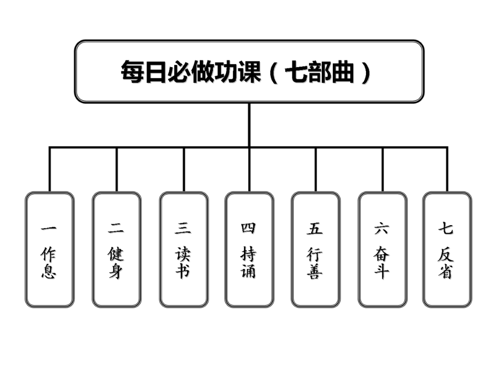

“戒色系统工程论”日课 ——每日必做功课
要想成功戒除多年手淫恶习，必须依靠系统戒色方法才有成功可能。本戒手淫日课《“戒色系统工程论”日课——每日必做功课》与《“戒色系统工程论”解读——以“系统方法”成功戒手淫指南》、《“戒色系统工程论”实战手册----“三体式”戒色修身法》一脉相承，是“三体式戒色修身法”的简化浓缩版。在实践本日课之前，必须反复学习“三体式戒色修身法”才能受益。日日践行必能戒除手淫，获得清净自在的人生。
## 一、基本原则理念
- 戒色理念
以《“戒色系统工程论”解读——以“系统方法”成功戒手淫指南》提倡的系统戒色理念为戒色指导思想。
2.戒色实践
以《“戒色系统工程论”实战手册----“三体式”戒色修身法》一文提倡的系统戒色方法《“三体式”戒色修身法》为戒色实践的核心，将《“三体式”戒色修身法》严格落实在自己日常生活中。
- 戒色日课
参考《“戒色系统工程论”实战手册----“三体式戒色修身法”》附录中的实践流程一文，灵活制定适合自己实际的戒色日课。
二、《每日必做功课》
以“作息、健身、读书、持诵、行善、奋斗、反省”七部曲做为自己戒色的《每日必做功课》。
作息【早睡早起】：每晚22点之前睡觉，最迟不超过23点，早上5、6点起床。作用：可以补足肾精元气，身体快速康复。身体健康是婚姻幸福、事业发达的基础。
健身【锻炼身体】：每日早起锻炼身体，至少半小时，蹲墙功、固肾功（八段锦）、站桩、快走、跑步、静坐、通臂劲都可以，选择2、3项天天坚持。作用：运动锻炼可以磨练意志，培养执行力、行动力、恒心，增强自己对抗手淫恶习的资本，同时身体健康得以恢复，为拼搏人生事业打下坚实基础。（具体健身内容参阅《“戒色系统工程论”实战手册----“三体式”戒色修身法》“固本培元”一节内容）
读书【读书学习】：每日坚持学习戒色文章，学习传统文化，时间可长可短，最短不少于30分钟。作用：通过读书学习改造自己的人生观、人生态度，转变思想认识，这是戒色成功的核心，也是人生获得成功的核心。（具体学习内容详见《“三体式”戒色修身法》、《以“系统方法”成功戒手淫指南》、《新人戒色指南---必读篇目举要》，以及戒色论坛的“入坛必看”版块。）
持诵【持咒称名】：每日持念“准提咒”21、49或108遍，或念诵“南无（na mo）观世音菩萨”圣号108遍，计数，此为定课。在生活中充分利用走路、乘车、等待等废时，随时随地默念咒语或圣号，不计数，此为散持。作用：咒语与诸佛圣号是具有一定特殊波长与振动频率的振动波，日日持诵有改善、调理身心状态与人生运势作用，最直接的功效是削弱淫欲心、有利于戒意淫，这也是成功戒色的关键。很多戒友反馈在坚持念诵观音圣号、持准提咒之后，淫心大大降低，心念变清净了，戒意淫有明显进步，这也是在此重点推荐的原因。（推荐阅读：《从地狱到人间——我成功戒淫的心路历程》、《也谈戒淫中的自力行持》、《方便之门——论被大家普遍忽视的戒色前辈常用“戒色利器”》、《“三体式”戒色修身法》）
行善【日行一善】：日行一善包括孝顺、孝养父母，心怀感恩，乐于助人。作用：日行一善可以培养福德，有助于顺利戒除恶习，改善人生运势。（具体善行内容参阅《 “三体式”戒色修身法》“培植福德”一节内容。实在无善事可做，可上各大戒色网站、戒色贴吧：点赞顶起戒色好帖、精华帖、回答新人戒色问题、帮助新人戒色、以各种方式宣传戒色、上传自己成功戒色的经验贴。一次算1善。）
奋斗【立志奋斗】：制定短期一、三、五年,中期七、九、十年,长期十五、二十、三十年的人生奋斗目标与愿景（健身、读书、学业、事业等）。奋斗目标确定后，再制定一个可实现这个人生目标的周密计划，量化到每一月、每一周、每一天，将全部精力与时间都投入到为人生目标奋斗之中。作用：把全部心思与精力都放在为人生理想、目标努力奋斗上，就会过的很充实，不会在无聊事上浪费时间，恶习自然而然远离，同时人生事业也获得成功。
反省【反省修身】：每日晚上睡前写戒色日记，反省自己以上六条在本日的落实情况，反省自己一天言行过失，不断改造自己的毛病、习气，改变自己的生活方式、生活习惯。作用：反省修身是最根本、最彻底的戒色法与人生成功之道。（具体反省内容参阅《 “三体式”戒色修身法》“全面改过自新”一节内容）
【总结】：《每日必做功课》是《“三体式”戒色修身法》的浓缩版，是无论戒色者日常事务多么繁忙，每日都要认真落实的必做功课，也是获得戒色成功的最低底线。
要真正落实好《每日必做功课》，必须要深入研究《“三体式”戒色修身法》和《“戒色系统工程论”解读——以“系统方法”成功戒手淫指南》提倡的系统戒色理念。每天落实《每日必做功课》中的七条内容，严格要求、约束自己一天的言行。
每天的戒色修身日记用这七条为根本内容反省自己，改进自己。如能真正践行落实这七条，不但戒色成功有望，而且人生事业也会获得成功。
三“自力＋他力”模式的误区
戒色有两种模式：“自力”模式（全靠自己）与“自力＋他力”模式（借助佛力)。“自力”模式不用解释，“自力＋他力”的戒色模式，即在自己努力的基础上，通过持咒、念佛等方式，借助佛力加持以补充自己力量的不足，最后达到成功戒除手淫恶习之目的。
《每日必做功课》的“持诵”为他力，其余为自力。《“戒色系统工程论”实战手册----“三体式”戒色修身法》 “清心式”中的“清心妙法”为他力，其余方法为自力。《“戒色系统工程论”解读——以“系统方法”成功戒手淫指南》的别行部分为他力、正行部分为自力。
采取“自力＋他力”模式的戒色者往往会产生思想上的误区，会对佛力加持产生依赖心理和不切实际的幻想。这类戒色者很容易忽视、轻视、排斥其他一些有效的戒色法，往往偏重念佛、持咒，虽然也有一些效果，但整体效果会打折扣。没有处理好自力与他力的关系，戒色方法比较单一，是此类戒色者的通病。由于存在思想认识误区，有时戒色效果反而不如采取“自力”模式运用“系统戒色方法”完全靠自己的戒色者。
此类戒色者要注意：借助佛力仅仅是一个辅助方法，只是“系统戒色方法”之一，把成功希望全部寄托在佛力上是错误的，是不可能成功的，自己的努力才是成功戒色的根本。把戒色重心放在自力上，在实践“系统戒色方法”的基础上再配合持咒念佛，才能取得最佳的戒色效果，否则“他力”也借助不上。
采用“自力＋他力”模式的戒色者一定要树立这种戒色认识，转变自己错误的思想观念，否则会走许多弯路。
结 论
《以“系统方法”成功戒手淫指南》、《“三体式”戒色修身法》、《每日必做功课》所倡导的“系统戒色方法”（“戒色系统工程论”）是无数成功者的精华经验总结，其核心理念为“戒色不仅仅是戒手淫，而是全方位的改造自己，是生命的重建”、“在戒色中生活，在生活中戒色”，将戒色与生活打成一片，“不仅仅是戒色，而是获得生命重生，再造新命运、重塑新人生”。实践表明，这也是目前戒色界最根本、最系统、最彻底、最全面、最具普遍适用性、推广性的大宗戒色之法。
成功戒色的通行模式——适合每个人的戒色法：以《以“系统方法”成功戒手淫指南》为戒色根本指导思想，以《“三体式”戒色修身法》、《每日必做功课》为戒色实践的核心，认真落实到每一天中，戒色必然成功！
附录1：《每日必做功课》图表

附录2：
《戒色日记》范例
【说明：这是一位戒友的戒色日记，这位戒友在落实系统戒色法——《“戒色系统工程论”体系》方面非常认真、用功，他的戒色日记格式(七部曲格式)与内容，供大家学习参考。以“作息、健身、读书、持诵、行善、奋斗、反省”七条做为自己戒色日记的内容，反省的内容可分为状况、收获(心得)、不足三方面或是状况、收获、心得、不足四方面来写。】
日记正文：
日期：2015年5月15日 星期五 天气：晴
必做功课：
一、作息：
昨晚早睡时间：21：30，今天早起时间：4：59。
二、健身：
- 站桩15+15分钟 ——完成（+晚上5分钟）。
- 蹲墙功60个，固肾功60个 ——完成
- 快走+慢跑共30分钟 ——完成。
- 礼佛21拜——完成（+下午21拜）
- 鸟飞式72个 ——完成。
- 金鸡独立10分钟 ——完成。
+下午爬铁东寨（小山）
三、读书：
1、《“三体式戒色修身法”纲要》与《三体式戒色修身法》对照研读1遍——完成。 2、练字10分钟以上——完成。 3、看《论语别裁》一书10页以上——完成。 +朗读《了凡四训》一遍。
四、持诵：观音圣号5000遍——完成
五、行善：
- 对父母及他人诚恳有礼——及格。
- 上网放戒色漂流瓶宣传戒色，顶起戒色好帖——完成。
- 编辑《手淫危害案例》，今天完成了76例到80例。
六、奋斗：
- 五个商务英语口语句子——完成（476句——480句）。【注：总计900句每天学5句】
- bec初级听力：复习12.2（第12单元第2节），学习12.3（第12单元第3节）。
七、反省：
状况：
1、昨晚入睡比较慢，不过没有夜尿，睡眠质量较好。早晨起来赖床了4分钟，精神状态不算差。
收获：
1. 从4月9日开始听bec初级听力，总共49个听力用了36天听完了。听力提高不少，但是还不打算去听中级的听力。明天开始复习12.3的之后，再从1.1开始听第二遍，把第一次听不懂的做过记号的，第二次如果再听不懂就要抄写了。反复，再反复。学习不是因为看了多少书，听了多少课，而是要理解了多少，吸收了多少，读懂了多少，学的可以拿来自己用的有多少。方法就是学的时候用心之外，还要时常复习。
2. 今天是难得的把所有的必修和选修的功课都做完了的，奖励就是一瓶“六个核桃”饮料。
心得：
1. 今天是练字第11天，目前的体会是练习的时候写的丑没关系，关键是要用心。每天不用练多久，10分钟到25分钟就好，因为练字，除了是写好笔画之外，我觉得更重要的，是写字时候的态度与心境。手中所写，是大脑所发出的命令，而大脑，又与心境是息息相关的，写的时候，要给文字赋予感觉，赋予神韵，赋予灵动。早上写的时候有那么一两分钟，感觉很奇妙，整个身心似乎不在字上，而是透过文字，给予它生命一样。
2. 爬山，快走时候听《幸福人生讲座》mp3感觉不错，这个可以继续坚持，做健身功法则不听，不然会影响效果。现在上午9点钟左右会好好休息一段时间，这段时间也听音频，也还不错。
3. 以"俭"修身，俭不只是节省用钱，自己的身体、精神也要保养，也要节俭。骄傲：没有内容而自以为了不起是骄，有内容而看不起人为傲。不管有多大学问，多大权威，一骄傲就失败。——论语别裁149页。我从《论语别裁》一书，学到的真的好多好多，很多耳熟能详的词语，句子，都可以再读深三丈，看远六尺。南怀瑾大师的智慧，值得我认认真真地去汲取。
1.
不足：下午在镇上买菜，刚停车的时候公路斜对面走出来一年轻女子，她正准备匍匐身子洗手，我虽然没有看到特别部位，但是不尊重地盯着她有一两秒后走进菜店。虽然没有起邪念，多看一眼也许是因为多年的坏习惯，但是，这是绝对不允许犯的行为，要改。今晚站桩已加5分钟，表示小惩。
写完日记准备睡觉时间：20：38。
（等下还要写周记。今晚出汗不少，还要再冲一下凉。争取21：30之前完成去睡觉）
【该戒友另外一些日记中反省部分的摘要】
2015-5-2 星期六 天气：晴 每天写日记认真总结，其实对脑力恢复和写作是很有帮助的。不管鸟飞式对治遗精有没有效果，我都会坚持下去，因为做了半个月感觉双手比较有力，特别是举手的时候，这是我的切身体会。
之前有一个错误观念，就是父母对我们好是理所当然的，同时觉得戒色前辈们写戒色文章，持之以恒地帮助他人戒色是理所当然的。或者知道他们很不容易，知道他们乐于助人的精神，可是内心里却没有那么深的感悟。这几天对于前辈们的牺牲精神，慈悲心怀，有了深深一步地感触，也为自己看了那么多的精品贴，经验贴而不感恩，不回帖支持而惭愧！我每天写篇日志才多少个字就觉得累了？想想前辈们写那么长的精品贴，而且写完还要反复推敲词句通顺正确，意思明确清晰，遣词造句是否连贯，还要反复修订，思考，多么大的工程！要花费多少时间与精力！要牺牲多少与亲人、朋友相处的时间！此时此刻我写这些文字的时候，内心的悲悯被燃起。
上午堂叔一家回来，去聊了一会，并且与堂弟聊聊他们的学习如何。一年多了没有这样主动大胆地与人主动平静地交谈了！
2015-5-3 星期天 天气：多云
日课把早晚锻炼与念观音圣号安排为必修功课，上午安排修身看书学习为必修功课，下午安排选修功课，其余家务、散步、行善，挺好。感觉一整天过得很快，仿佛什么都没有做一样，但一整天下去细细一想，却发现做了那么多有用的事情。这，就是日课与日记的功劳。
《“三体式戒色修身法”纲要》基本上是《三体式戒色修身法》的标题，但为什么要对照着看？因为纲要是总，“三体式”是细，总与细相结合，更加利于记忆背诵。
《手淫受害者5000例》去年飞翔哥刚整理出来时我就知道了，因为那时除了在论坛，也开始在戒色吧里混了，但是我当时对于5000例不以为然，为什么？因为这是受害者5000例，而我自己也是受害者，所以我觉得就拿自己的亲身经历做为自己的教训就足够了。而且5000例，一看那么多例子，那么多文字，就退缩了，不愿意去看。昨天看了前言，今天上午看了“驳斥1手淫无害论”和“2手淫害惨了我”，那些一个个戒友的痛苦经历映入我的双眼，击打着我前一刻还平静如水的内心。看完我的感受就是拿自己的亲身经历来做为教训是远远不够的！因为思想深度不够！因为感触程度不够！
下午去铁东寨了，虽然是自己一个人，但是没有觉得孤单。一是嘴角保持微笑，只要在笑内心就会愉悦，二是默念准提咒，三则是尽力地去感受大自然。为什么在家里半年多了恢复那么慢？因为前列腺炎问题不敢走太远是一个原因，但更因为是自己突破不了走出去的防线，瞻前顾后，怕这怕那。骑车来回50分钟，爬山与下山25分钟，看看山，感恩自然，心情开阔美好。车油费大概4块钱，可接受。 看了南师的一口气一口气的念诵方法（感谢日日知非的文章），发现我的念诵圣号方法错了。我之前深吸一口气，然后念15遍左右。而正确的方法则应该是不要深呼吸，一口气念到肚子瘪了没力气念了之后，闭口用鼻子自然吸气。突然想到一句话：人生处处是修行，念佛持咒也是一种很好的锻炼身体的方法！
淘宝上买的念佛计数器到了，今天下午就开始用计数来计算了。白天把计数器放在裤袋里，散念的时候手伸进裤袋按计数器来计数，散念的要求是4500，专念的要求是（1000+1200+1300）。先要求一天8000，等速度提高了再提高数量。
2015-5-4 星期一 天气：阴转中雨
早晨计数器和手机计时器同时使用，观音圣号1000遍用了接近18分钟，为此念诵圣号要求改为10000遍。
现在真的是太多太多的戒色文章与方法，除了“三体式”，目前哪里有这么系统全面的方法？很多的戒友，包括我之前也是，错误之一就是顾此失彼！戒色从“三体式”入手，是最佳途径。
2015-5-5 星期 二 天气：阴
很早就知道飞翔哥所强调的：做笔记。汉军哥的qq空间日志里也有提到把《“戒色系统工程论”解读——以“系统方法”成功戒手淫指南》看三到九遍，做笔记。而我直到5月5日才再次打开系统工程论，抄写笔记，抄了之后又一次体会：抄笔记的效果比只看大三倍以上！如果只看，而不写笔记，真正学到的要少得非常多！
2015-5-7 星期四 天气：多云
戒色环境无非就四种：上学、工作、在外失业、在家休养。每一种都有每一种的优点与弊端。在家最大的缺点，我想就是太冷清了，太闲了，没有伙伴。所以一年多来不敢让自己处于闲的状态，一直学英语。大部分的时间念观音圣号，一天专念四次加起来大概七八十分钟，其它的都在散步中念，感觉挺好。
2015-5-8 星期五 天气：阴
今年一月份初，戒色论坛就推出了《“戒色系统工程论”实战手册——“三体式”戒色修身法》，文章开头很清楚地写了对《“戒色系统工程论”解读——以“系统方法”成功戒手淫指南》至少要阅读3--9遍，做摘抄笔记，而我却一直只是随便看看，更别提做笔记了。今天把《以“系统方法”成功戒手淫指南》最后的笔记也摘抄完了。体会就是一个，抄了笔记比没有抄，印象要深刻3倍以上，或者有六七倍也不好说。而且看的时候，抄的时候，一定要用心。怎么个用心法？看得慢一些，带着思考去看，去摘抄。这样才真正的吸收进去！
养生功法也做得越来越有感觉，特别是今天早上的固肾功与上午礼佛21拜，身体有一股暖流在身体流淌一样，十分舒适愉快。坚持下去，效果肯定会越来越好。
一万遍观音圣号的定课，最后八百多遍念得非常艰难，估计是一天念太多的缘故，声音都快发不出了。之后到楼顶天台里一边散步一边念，也艰难，只能慢点。后面肚子和脸都有点痉挛了，不过任务还是完成了，继续坚持。散步的时候念圣号感觉良好，这个习惯要继续保持。
修身养性方面多加一个必修课——睡前看10页或10页以上的《论语别裁》。上下两册931页，争取3个月看完。必修课很多，每天都计划好时间，分配好精力，无特殊情况可以完成的！
周初只念75分钟观世音菩萨圣号，周后念佛计数器到了之后改为念圣号10000遍，确实很有用！意淫次数大大的减少了。周二开始中午和傍晚沿着小溪边散步，同时念圣号，感觉很好，专念加散念10000遍虽然累点，但是没有达到无法忍受的程度。而且对于像我这样伤到神经的小伙子来说，有一个缺点就是容易胡思乱想，这种想法自己很难控制住，后脑袋不舒服的同时，就是容易冒出一些事实证明根本无用的念头，念圣号，把这个毛病也控制住了。
散步对身体恢复很有效果，现在也明白彭博士让伤精的病人最少散步一小时以上的原因了。散步时候如果会胡思乱想，就念圣号。一举两得。
日课，我不赞成制定的太死板，因为人是活的，实际情况肯定不会完全按固定的日课去做，但是大方向是不能松懈的。比如必修课，是必须完成的，如果没有完成，也一定要记录上原因。其次是选修课，最好是有几个宽松的选择，可以做到劳逸结合，避免心理疲惫。但是也要做到宽为限、紧用功。
有日课、日记跟没日课、日记，效果截然相反！表面上看，好像制定日课、写日记花费了不少的时间，而之前也正因为如此才没有实施这两件事。但实际上，它俩的作用是远远高于所花费的时间的！
2015-5-9 星期六 天气：中雨
念诵10000遍过于艰难，通过这三四天的实践，不符合劳逸结合的恢复原则，特别是今天下午，念得有气无力，继续死撑也许可以完成，但是身体会倒。因此今天开始把念诵圣号的要求减少到日诵7000遍，一年内完成200万遍。如果某一天有足够的精力与时间，则再加量。戒色，是一场持久战。我已经用猛火煮了一年多，虽然身体恢复慢，但是觉悟与决心已经大大提高，现在开始，将用小火煮，进入全面的恢复与奋斗阶段。
2015-5-10 星期天 天气：小雨
一口饭吃不了大胖子，所以不可急于求成，一定要稳扎稳打，时刻总结思考。累了就要休息。强撑，除非是特别特别紧急情况，不然一定要散步或者深呼吸或者做眼保健操或者躺下听音乐。时间不可荒废，但也要量力而行。
因为感冒，今晚困、累，所以鸟飞式只做36个，念圣号7000遍之后看完论语别裁10页，就准备睡觉了。看完书发现才19：51，还不想太早睡觉，所以又做了10分钟金鸡独立，36个鸟飞式。通过今晚，得出一个结论：选择，确实是比努力更重要！很多事情，成与败，得与失，就在自己的一念之间。现在内心越来越平静，不再有以前那么荒唐的急躁冲动，这跟坚持了几个月的金鸡独立肯定有关的。所以不可以放弃。
大量的念观音圣号（日课1万遍、7千遍）真的太消耗体力了，而看书虽然也消耗体力，但是更多的是消耗脑力和眼睛。所以目前再把念圣号数量降低，改为5000遍，留出来的时间用于看书，不过一年200万遍不会改变，等体能提高了再同时提高到6000遍、7000遍。
2015-5-11 星期一 天气：阴转晴
戒色，找一位成功者作为榜样，可以少走很多弯路。那么学习传统文化，是否也可以找一个成功者作为榜样，专心学习他的智慧呢？
传统文化浩如烟海，种类与书籍繁多，让人目不暇接。东看西看，这学一本那学一本，容易让自己迷失。
今天我做了一个决定，传统文化，以南怀瑾大师的书籍作为自己立身处世的根本，再结合《弟子规》、《了凡四训》、《大学》、《中庸》、《论语》、《孟子》等书的原文品读背诵。顺序则是儒家《四书》先，其次就是道家的《道德经》，再就是佛经。先读原文再学习南怀瑾大师对应的讲解书籍等。单单这不到10本的书籍应该够我仔细学习2年了。
南怀瑾先生的《论语别裁》把论语讲得如此通俗易懂，活灵活现。不得不说，先读熟原文，再看别裁，印象和理解会更加深刻。
2015-5-12 星期二 天气：晴
身体的康复进度是以“进二退一”的方式进行的。虽然前面十来天状况一直不太好，但那是因为体力消耗过大的原因。现在养生功法坚持了十来天，念了几万遍的观世音菩萨圣号，加上最近意淫已经很少很少（偶尔还会有些的），身体总体还是在恢复的。今天明显的感觉就是发自内心的愉悦感更加的强了，对外界的感知也清晰了些。
5000遍观音圣号的要求对目前的身体情况刚刚合适，既不会因为怕完成不了任务而从早到晚争分夺秒不顾身体透支地念，也不会因为总想着念圣号而对养生功法的质量与心境有所影响。而且讲话声音，自己听的效果来看，中气确实比以前足了，只是不知道父母听的效果如何，这个有待观察。
2015-5-13 星期三 天气：晴
今天看论语别裁，看到118页，有一句话让我觉得非记不可，那就是“看的破，忍不过；想得到，做不来”。知道了邪淫的危害，那是看的破。却总是无法戒掉手淫意淫，挣脱不出，那是忍不过。想要恢复健康，与邪淫一刀两断，那是想得到。可是真正行动起来却唉声叹气半途而废，这是做不来。反过来也是如此，归结起来，就是四个字：看、忍、想、做。为什么会邪淫？就是看了扰乱心神的画面，看了在忍，可是没有忍住，就在想（意淫），只要继续想，哪能不做出让自己后悔的行为来啊！
吃得苦中苦，方为人上人。坚持下去，肯定会有“山重水复疑无路，柳暗花明又一村”的那一天！
2015-5-14 星期四 天气：晴
“从前种种，譬如昨日死；从后种种，譬如今日生”。不管以前读书怎么不认真，不管以前怎么沉迷邪淫、沉迷网络小说荒废大好年华，不管以前戒色怎么不认真不努力不坚持，不管昨天怎么样今天白天怎么样，都过去了，我要做的是好好总结，时刻反省，不让自己一错再错，然后再好好坚持。
从一月份每天读《了凡四训》读到三四月份，总共应该有80到100遍以上了。基本的内容和名句都可以记得，只是这本书太过于博大精深，很多的智慧我依然还领悟不了，通过现在每星期读1到2遍，温故而知新，感觉良好。
四书也学完了《大学》、《中庸》、《论语》，也还没有特意地背诵，明天就学习《孟子》了。学的时候用心朗读，过段时间再去朗读，再配合南怀瑾大师的书籍《论语别裁》、《原本大学微言》、《孟子旁通》，还有一本讲中庸的，书名忘了。每一本看两三遍，那么如何做人，怎么做事，应该可以贯通了。
宣誓，需要有肃庄恭敬的诚意。事事要发自内心的诚意，而不完全在于形式，一切形式，都必须配合内心的诚恳，才有意义。——《论语别裁》138页。戒色宣言我念得多了，只要双手一抱拳，誓言就脱口而出，因此就越来越像一个形式，念完之后在体内生发出来的那鼓气也越来越淡，是因为我的心不诚恳了。所以在我写这些文字之前，再次抱拳向东，抬头挺胸，声音端正，脑海里的思维跟随着所发出的每一个字，感受确实跟早晨和晚上的两次不一样。
2015-5-15 星期五 一周总结
意淫大大减少，平时很少会出现意淫情况，这是因为从早晨起床那一刻到晚上睡觉这一刻，都是处于忙碌充实状态，再加上念观音圣号，才有这样的效果。如果不念圣号，那么效果肯定没有那么好。
在5月12号左右，就感觉日课完成的质量没有那么好了，感觉有必要重新修订日课。在13号晚上完成功课后，重新制定了日课，昨天和今天是按照新的日课实行的，质量提高很多。
日课要工整写在纸上，放在房间显眼的位置，因为即使对日课内容烂熟于心，若有一个实质的物体作为参照与提醒，效果会比较好。
爬小山对戒色帮助很大，特别是爬到山顶，眺望远处群山和山下的小镇，心胸特别开阔，而且山顶风大，神清气爽，脑袋都会比较清醒。只要天气好，这个功课要一直实行下去。
路上听《幸福人生讲座》的音频，感觉很好，收获很大！ 苟日新，日日新，又日新。
2015-5-16 星期六 天气：阴转小雨
对外界的感知似乎回到了高中时候，应该是脑力有所恢复，内心愉悦感增加不少。
接近一年半的强迫症已经慢慢过去了。
把自己封闭在家的错误已经在慢慢地纠正了。佛寺、道观都是在深山宁静处，我现在也是跟外界处于半封闭的状态。这一段时间的沉淀，相信会对以后的人生有意想不到的影响。用功、努力是必须的，但是物有本末，事有终始，在保证恢复身体的前提下去用功学习，才是正确的。该去散步去休息的时候，就不应该去看书或者去做太耗费精力心神的其它事情。
2015-5-17 星期天 天气：中雨
早晨做蹲墙功第一次达到100个，汗出的不少，不过不怎么累。做的时候有点享受，配合俯身吸气，起身呼气的呼吸节奏，注意力放在后腰周围，感觉挺舒服。
固肾功早晨也是做了100个，计时测算出共花费16分45秒，与彭博士的要求1分钟6个是一样的，做的时候也很有感觉，主要是做的身体舒服，不是注重形式，而是带着与身体沟通的方式去做。用心地去做，去坚持，恢复肯定会理想的。
晚上站桩时候把灯给关了，而且时间不是看闹钟，而是用手机计时，发现这样好。昨晚和今晚都是站20分钟，加上本来在晚上留出的时间比较充裕，因此今晚开始，晚上站桩的日课改为20分钟。感冒已经基本好了，而且圣号念的速度比两周前快了一点，圣号的要求今天开始改为6000遍。
人的一生中，最光辉的一天并非功成名就的那天，而是从悲哀绝望中产生对人生挑战，勇敢迈向成功的那天。
抑郁症爆发，想自杀，对人生深刻绝望暗淡的那一两个月，那种痛苦与煎熬即使过了一年半，我依然记忆犹新。在接受现实用意志战胜煎熬与颓废、沉沦、消极、放弃之间，我选择了前者，我把它当做人生中的第一座高峰，不勇敢地攀爬上去，那么我就会滚落悬崖，摔一个粉身碎骨、面目全非。如果运气好，没有英年早逝，那么往后活着的几十年，还有一座又一座的高峰等着我去跨越，有了战胜第一座高峰的总结与经验，再来多少高峰，我都不会选择退缩。
2015-5-18 星期一 天气：阴
放漂流瓶宣传戒色这个事情还是要每天坚持的。即使没有人捡到我的瓶子，或者有人捡到了但是又扔了或者厌恶了，都没关系，因为当我放瓶子的时候，我帮人戒色的善心已经发出来了，日积月累，这对我的身体恢复和福德积累会有好处的。而且放瓶子的时候都是复制一样的句子，等待网络的时候也在念南无观世音菩萨圣号，实际来讲并不费多少时间。了凡四训云：善心真切，即一行可当万善，况全县减粮，万民受福乎。我这个即使只是半善，加上顶贴算它半善，28年也有万善了。贵在坚持。
## 2015-5-19 星期二 天气：阴 写日记反省修身，需要有一个前提，就是要在学习《弟子规》和《了凡四训》的基础上，反省修身的作用才会明显。若心中没有一个是非善恶的标准，是很难认识到自己的错误与不足的。
去年我就觉得自己长得好看，英语朗读觉得也不错，现在看去年的相片，丑的一塌糊涂，听朗读录音，比公鸭的叫声还难听。之所以会有这么大的反差，就是因为当时不知道圣贤教诲，不知道真善美，而且自己还以丑为美，以恶为善。所以一年前叫自己写日记来反省一天的言行过失，估计会一直留空白。不过也不代表自己现在已经完全懂了什么该做什么不该做了，毕竟人的认知是有一定的局限性的。最基本的，则是以《弟子规》的要求来对照自己做的如何。而最基本的，往往都是最重要的。就好像bec初级，是最基本的，日常的英语应用中，使用最多的其实也往往都是最初级最简单的。
2015-5-20 星期三 天气：小雨
我有一个发愿，一个人生志向，一个成功信念。这三者对我的帮助大不大？实话实说，非常大，有了发愿、志向、信念，让我有目标有方向，不会迷茫，不会得过且过，让我知道我应该做什么，怎么去做。但是祸福相倚，对我有益的同时，也让我有了不切实际的幻想，好像我已经达到了那个水平，所以会活在自我的以后的世界里，而忽略了如今的现实。
光明蜘蛛前辈说的不错，不要去想太远的事情，把今天的日课做好，就足够了。不要想着三五天就可以改变，两个月后写下那时的身体状况，再看两个月之前的日记所记录的身体状况吧！是的，进步不在于快与多，而在于实与稳。做好今天的日课，就算是高分了。 嘴角要时刻保持微笑，对别人，可以感染快乐，让他人如沐春风，这是最简单也是最好的行善的方法。对自己，则可以愉悦心情，保持内心宁静，只有好处没有坏处。
通往终点的路上注定是曲折的，没有人可以一帆风顺地直线到达。戒色也是如此，由于初期戒色认识不到位，觉悟不够高，态度不够坚决，加上身体与精神的折磨会做出不够理性与冷静的判断，弯路是在所难免的。但是山不转路转，路不转我们自己转。只要走《“戒色系统工程论”体系》的这条天路，加上自己的大量学习与总结，虽然有弯路，但是可以把它最小化。
一月份刚出“三体式”的时候，坚持过两三个月的念诵准提咒，不过那段时间念得没有感觉，4月份就放弃准提咒改为念南无观世音菩萨圣号。今天开始，继续坚持念准提咒，要求是专念108遍，在傍晚或者晚上念。今天下午念108遍花费9分10秒钟，相当于念南无观世音菩萨圣号550遍左右。
下午念准提咒比较有感觉了，我想是因为念的时候是发自恭敬心与诚意心去念的，念之时所有的思想与注意力都放在咒语上，不同于前两三个月念的比较随意。这也说明做任何事情，真的是要认真、专心去做，如果只是随便地、应付任务一样地去做，不但没有效果，反而还白白付出自己宝贵的时间与精力。念观音菩萨圣号6000遍的要求不会改，而且在保证身体恢复的原则下，能超额完成则尽量超额完成，哪怕超五十、一百遍也好。
把“少些幻想，多些实干”改为【不幻想，去实干】。把不切实际的幻想也当做意淫来认真地治疗，幻想都是浪费自己时间与心神的亏本买卖，用“思考”来代替幻想。
2015-5-22 星期五 天气：中雨
四、持诵： 1、专念准提咒108遍——完成。 2、念“南无观世音菩萨”圣号6000遍——完成
第四周 日期：5.16--5.22
本周心得：
1、症状出现反复是正常的，不可能在日课坚持几周的情况下就恢复，如果真如此，戒色也就像感冒一样休息下就能好了。戒色是一场持久战，所以一定要有大局观，戒色的前进方向没有偏离，只要总体情况没有后退的离谱，症状不严重的离谱，则日常里注意劳逸结合，多散步多休息，保持一个平常心、保持乐观，继续做好每天该做的事情，就可以了。
2、活在当下，过去的已经过去不必留恋，未来的还没有来也不必妄想，把握好现在，这才是关键。不浪费时间，多做有益的事情，坚持过好每一天，脚踏实地一步步向目标前进，自然会迎来“柳暗花明”的那一天，成功自然会而且一定会来临的！
该戒友的《新日课》
早晨：
4:55~6:30： 起床，洗漱，喝水，叠被子，宣誓祝愿，念圣号700遍，站桩15分钟，蹲墙功60个，固肾功60个，快走+慢跑30分钟。
上午：
6:35~8:30： 扫地与弟子规，练字10分钟以上，煮菜，吃早餐，散步。
8:35~10:55： 5个口语句子，（选修：休息一二十分钟），BEC听力，散步，眼保健操，礼佛21拜，念圣号700遍。（选修：学习《孟子》20分钟）。
中午：
11:00~14:55：煮饭，洗菜，散步，煮菜，吃午饭，散步，午觉，散步。
下午：
15:00~17:00：
①：BEC中级听课60分钟，眼保健操，看《蔡志忠漫画-大学中英文》一书。
②：《了凡四训》一遍，去铁东寨爬小山。
③：其它。
17:05~19:00：晚饭，散步，放牛，冲凉，散步。
晚上：
19:05~21:15：洗漱，喝水，宣誓祝愿，心经，鸟飞式72个，念108遍准提咒，念圣号700遍，站桩20分钟，金鸡独立10分钟，看《论语别裁》10页以上，写日记，准备入睡。
备注:
1、散步时可同时念圣号，或听有声书（传统文化讲座），圣号优先。有临时功课，也优先安排在本该散步时间段完成。
2、因特殊情况无法完成必修课，则下午先完成必修课再完成部分选修课。
【注一】：念诵要领
1、念诵观音圣号的方法:所谓十念记数者，当念佛时，从一句至十句，须念得分明，仍须记得分明。至十句已，又须从一句至十句念，不可二十、三十。随念随记，不可掐珠，唯凭心记，若十句直记为难，或分为两气，则从一至五,从六至十。若又费力，当从一至三，从四至六，从七至十，作三气念。念得清楚，记得清楚，听得清楚，妄念无处著脚，一心不乱，久当自得耳。须知此之十念，与晨朝十念，摄妄则同，用功大异。晨朝十念，尽一口气为一念，不论佛数多少。此以一句佛为一念。彼唯晨朝十念则可，若二十三十，则伤气成病。此则念一句佛，心知一句。念十句佛，心知十句。从一至十，从一至十，纵日念数万，皆如是记。不但去妄，最能养神。
以上是印光大师开示的“十念法”。也就是说，若一口气念20多遍，很容易伤气伤身。正确方法是：呼出第一口气时念三遍观音圣号，自然吸气，呼出第二口气又念三遍，第三口气念四遍，边念边心记数量，三口气念完10遍观音圣号。以10遍为一个基本单位，这时可以按一下计数器，或拨一下念珠计数，然后从头从零开始“三三四之十念法”，循环不已。计数100则：100×10＝1000遍。用这个方法很容易定心而且养气，即使念几千、上万遍也不会因为大量计数而伤到手指。
2、持诵准提咒的方法：按照南师开示一口气一口气的念诵法，先自然（不要刻意）吸一口气，然后呼气，呼气时念诵准提咒全咒（28个字），中间不换气，一口气念完全部准提咒，这是一个完整的过程。念完一遍后，体内气也没了，肚子也瘪了，这时闭口，用鼻子自然吸气，吸满气后，接着开口念准提咒，这样“一口气一口气的念准提咒”（一口气念完一遍准提咒，念得慢一些，尽量让体内之气念完，这是我个人的念法，我觉得这个方法较好。有的人一口气念2遍准提咒，念的速度就得快，否则念不完。念3遍就不太合适了，因为准提咒较长，念几口气则可，念多了就伤气、消耗体力，而且心浮气躁，不易体会气脉的震动）。念的时候把注意力放到咒语的内容上，念的清楚、听得清楚，口念心听。如此念诵身心会愉悦无比，可以体会到咒语音波在体内的振动，有利于打通气脉与人体脉轮，转化身心。如果真正体会到要领，一开口念诵，就已经没有妄念了，自然心气合一，感到身心皆空，与法界同体。如此念诵也是在修气修脉，是一种身心的调整与修炼，可祛病强身，达到类似气功的健身效果。建议大家自己上网详查“南师开示一口气、一口气的念诵方法”。
念诵总体原则：无论念诵观音圣号，还是持诵准提咒，都不可贪多求快，否则会心浮气躁、杂念丛生、耗气伤身。正确的方法是：口念心听，念得清楚、听得清楚，声声入耳、入心，速度不急不缓，声音不高不低，气定神闲。如此念诵不但心无杂念、定心养神，而且养气、养身，转化身心气脉，祛病强身。
【附记】：
日记中的这位戒友原先的念诵方法有问题，感觉大量念诵很耗体力。改为以上念诵方法后，散步散念观音圣号1000遍，花费19分钟，专念观音圣号1000遍，16分28秒，比他之前的念诵速度快2分钟。准提咒念108遍，一口气一遍，10分20秒，比之前慢1分钟。不管是准提咒还是圣号，他按照以上“念诵要领”念诵，最大的感受就是专注度大大提高，念得时候别人叫他也很难快速反应过来，而且大大地省力，念完不觉得累，之前都会累。
【注二】：
该戒友之所以戒色行动落实非常到位，就是因为制定了戒色日课，并每天写戒色日记自我反省。日课的制定要符合自身实际，在实践过程中大家要根据自己实际情况进行调整，以确保日课能够坚持下去。戒色日课的落实贵在持之以恒，方法是以戒色日记的形式加以自我监督。持之以恒的坚持是戒色成功的先决条件。戒色日课与戒色日记互相配合，对于成功戒色绝对是不可缺少的，是走向成功的重要保障。
附录3：
### 日常戒色注意事项 1、制定人生奋斗目标。制定一、三、五年人生发展计划，计划必须具体详细、有可操作性。计划工整地抄写在纸上，或打印出来，贴在住处最显眼地方，以提醒自己向目标努力。学生应以学业为重，制定一个学习、锻炼、奋斗计划；已工作者，制定学习传统文化、学习技能、锻炼、工作、事业、人生发展计划。
2、打扫居住环境。每天清理、打扫自己所居住的庭堂院落或居室，把所有物品摆放整齐，这是戒色修身的第一步。居住环境脏乱，说明自己内心也脏乱，心外灰尘都懒得打扫的人，心内灰尘也不可能打扫。打扫居室都做不到，成功戒色免谈。
3、培养有益身心的业余爱好，让自己充实起来。
4、合理安排每天时间。每天把时间安排紧密一些，让自己多做事，空闲时间控制在两小时之内。
5、控制上网、克服网瘾。无事不上网，如需查资料，查完就下。每次上网不超过一小时。不乱点网页、不打开色情网站。克服沉迷网络游戏、看网络连续剧等习惯。如果电脑在自己卧室，打开房门不关闭。电脑安装反黄软件。
6、改掉熬夜习惯，早睡早起。晚上9-10点入睡，最迟不超过11点。无紧急、重要事绝不熬夜。能推迟的事，先睡觉，第二天早上早点起来做。每天保证晚上10点至凌晨4点之间的睡眠时段，养成有规律的生活习惯。有条件的，每天中午睡半小时午觉，有利身体恢复。
7、控制欲望。早上醒后，如处于勃起状态，立刻起来，不赖床。晚上睡前避免喝大量水或饮料，睡觉不要盖太厚。如感觉某几天性欲特强，可减少食量，晚饭可半量，并增加运动量。
8、日行一善。每天最少做一件举手之劳就可以帮助他人之善举。如水龙头没关紧，人走灯未灭等浪费现象，都是你的机会。“勿以善小而不为”，行善不在大小，只要留心每天都有机会，就看有没有这个心。碰到日行一善的机会毫不犹豫，不要错失良机。日积月累则成大善。
9、废时利用。上下学、上下班路上，以及白天一切等待的废时，充分利用起来，不计数默念准提咒或观音圣号，代替无聊玩手机。废时充分利用好了，一天持准提咒1000遍以上也是可以做到的。
10、改掉其他不良习惯。（1）烟：戒掉，因工作原因不能完全戒掉的，至少做到自己一个人时不吸。（2）酒：戒掉，因工作原因不能完全戒掉的，至少做到自己一个人时不喝。（3）肉：戒除期间，减少食肉量，以素食为主，增加水果蔬菜豆类食用量。（4）拖拉：凡事一旦决定，或是需要做的，立即动手去做，不拖拉磨蹭。（5）失信：说话不能言而无信，做不到的事不说，言出必行。
11、结交益友，融入社会。多交益友，远离酒肉类等损友，远离不良色情场所。减少室内独处的机会，多做室外运动，多参加有益的社会活动。
12、归纳一下日常戒色方法：看好书、多行善；少上网、常锻炼；孝敬父母、亲近自然；远离色情污染源、走进社会多磨练！
## 附录4：
《“戒色系统工程论”体系》
1、《“戒色系统工程论”解读——以“系统方法”成功戒手淫指南》（戒色指南）
2、《“戒色系统工程论”实战手册----“三体式”戒色修身法》（日课流程）
3、《“戒色系统工程论”日课——每日必做功课》（日记模式）
(《“戒色系统工程论”体系》至此全部结束，祝大家早登成功的彼岸！)